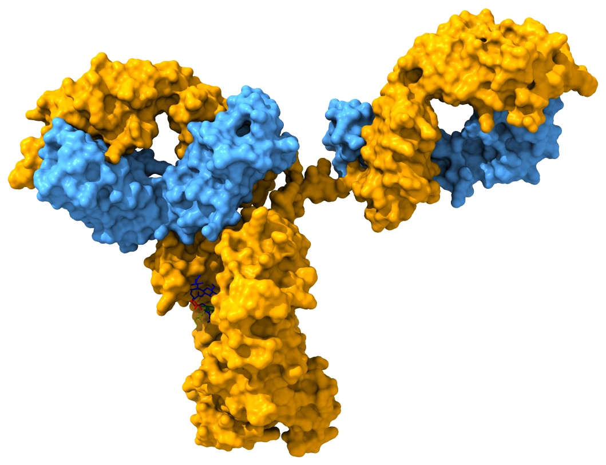

How antibodies are built decides what they do.
We study human IgG antibodies, from the B cells that make them to the immune cells that act on them. We focus on how glycosylation, subclass and allotype tune antibody effector functions, and how this shapes alloimmune disease, infection and antibody therapy.
Led by Prof. Gestur Vidarsson at Sanquin Research, Amsterdam, with a professorship in Immunoglobulin Biotherapeutics at Utrecht University.

Four research lines
Our work runs from basic antibody biology to diagnostics and better therapeutic antibodies.
Antibodies against blood cells
How alloantibodies and autoantibodies destroy red cells and platelets, as in haemolytic disease of the fetus and newborn (HDFN) and fetal/neonatal alloimmune thrombocytopenia (FNAIT). Disease-specific IgG is often glycosylated differently from the rest of plasma IgG, and this changes its pathogenicity.
Where afucosylated IgG comes from
Why some immune responses produce IgG lacking core fucose, which strongly boosts FcγRIIIa binding. We find these responses are typical of enveloped viruses and of natural immunity to malaria, and we study how B cells regulate this at the clonal level.
FcRn biology
How the neonatal Fc receptor keeps IgG in circulation and transports it across the placenta, how it differs between subclasses and allotypes, and what this means for IVIg and FcRn-blocking drugs.
From discovery to the clinic
Using antibody glycosylation and subclass features to predict disease risk, guide patient management, and engineer more effective antibodies, including monoclonal anti-RhD prophylaxis and glyco-engineered bispecifics.
Publications at a glance
Updated automatically from OpenAlex, an open citation database. Counts are usually somewhat lower than on Google Scholar, which also indexes theses, preprints and conference abstracts.
Publications per year
Loading…
Top collaborating groups
- Manfred Wuhrer64 papersLeiden University Medical Center
- C. Ellen van der Schoot63 papersSanquin / Amsterdam UMC
- Theo Rispens52 papersSanquin
- Masja de Haas35 papersLeiden University Medical Center
- Rick Kapur23 papersSanquin
Group leaders by number of joint PubMed-indexed papers (any author position).
Most cited
- IgG subclasses and allotypes: from structure to effector functions2,667Vidarsson et al., Frontiers in Immunology (2014)
- Potent neutralizing antibodies from COVID-19 patients define multiple targets of vulnerability1,059Brouwer et al., Science (2020)
- Afucosylated IgG characterizes enveloped viral responses and correlates with COVID-19 severity401Larsen et al., Science (2020)
- Decoding the human immunoglobulin G-glycan repertoire reveals a spectrum of Fc-receptor- and complement-mediated-effector activities355Dekkers et al., Frontiers in Immunology (2017)
- MS-based allotype-specific analysis of polyclonal IgG-Fc N-glycosylation297Sénard et al., Frontiers in Immunology (2020)
Recent work, 2023–2026
Full list on PubMed and Google Scholar (ORCID 0000-0001-5621-003X).
* Shared senior authorship.
Team
Get in touch
We welcome questions from students, clinicians and collaborators.
Sanquin Research
Immunoglobulin Research
Plesmanlaan 125
1066 CX Amsterdam, The Netherlands
Utrecht University
Professor of Immunoglobulin Biotherapeutics
Biomolecular Mass Spectrometry and Proteomics
Department of Pharmaceutical Sciences